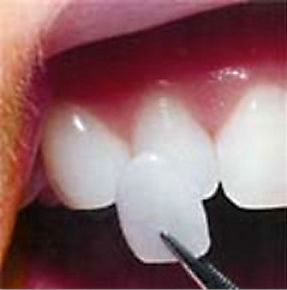

We often wonder how the celebrities on television have such flawless smile jewelled with perfect teeth. And we envy them as much. Ever ponder upon this question how they all possess the perfect teeth? The answer may be Porcelain Veneers. A Porcelainn Veneer is a thin shell of porcelain bonded upon the front surface of a tooth to enhance its look. Hospitals in India provide easy access to this treatment by dental surgical experts.
When it comes to cosmetic appearance, a porcelain veneer may just be your ally. Porcelain veneers have better life-like guise and also help resist staining. However, porcelain veneers can be fairly expensive and if used in the wrong application, can be prone to breaking. Unlike dental bonding, a broken veneer must be replaced as it usually cannot be patched or repaired. Porcelain veneers are thin translucent laminates made to improve the shape, spacing, colour of natural teeth, to correct crowding, or to replace composite bonding. Those who already have crowns on their front teeth, porcelain jacket crown replacement may give a more natural, attractive appearance.
There is a reason why Porcelain Veneers are often referred to as
‘Instant Orthodontics’.
They provideperfect solution for those with teeth that are too short, crooked or have too much gap in between. At the Advanced Dental Care centre, master ceramists create the dental ‘masterpieces.’
 Veneers can also be made of composite resin reinforced with quartz and are called direct veneers. They are most commonly used on the upper front teeth, but can also be used on the lower and back teeth. Veneers are usually placed on the teeth in sets, allowing an even-looking smile. Individual teeth can be veneered; it just may be more difficult to match the natural color of the teeth. The entire procedure takes around 3 weeks instead of braces that easily take two years to shapen your teeth. Braces also don’t solve problems of size, shape and colour of teeth.
Veneers can also be made of composite resin reinforced with quartz and are called direct veneers. They are most commonly used on the upper front teeth, but can also be used on the lower and back teeth. Veneers are usually placed on the teeth in sets, allowing an even-looking smile. Individual teeth can be veneered; it just may be more difficult to match the natural color of the teeth. The entire procedure takes around 3 weeks instead of braces that easily take two years to shapen your teeth. Braces also don’t solve problems of size, shape and colour of teeth.